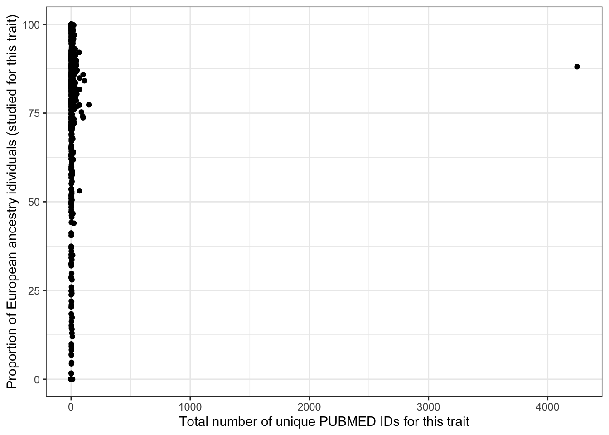

Disease investigated by ancestry
Last updated: 2025-08-25
Checks: 7 0
Knit directory:
genomics_ancest_disease_dispar/
This reproducible R Markdown analysis was created with workflowr (version 1.7.1). The Checks tab describes the reproducibility checks that were applied when the results were created. The Past versions tab lists the development history.
Great! Since the R Markdown file has been committed to the Git repository, you know the exact version of the code that produced these results.
Great job! The global environment was empty. Objects defined in the global environment can affect the analysis in your R Markdown file in unknown ways. For reproduciblity it’s best to always run the code in an empty environment.
The command set.seed(20220216) was run prior to running
the code in the R Markdown file. Setting a seed ensures that any results
that rely on randomness, e.g. subsampling or permutations, are
reproducible.
Great job! Recording the operating system, R version, and package versions is critical for reproducibility.
Nice! There were no cached chunks for this analysis, so you can be confident that you successfully produced the results during this run.
Great job! Using relative paths to the files within your workflowr project makes it easier to run your code on other machines.
Great! You are using Git for version control. Tracking code development and connecting the code version to the results is critical for reproducibility.
The results in this page were generated with repository version 31e868c. See the Past versions tab to see a history of the changes made to the R Markdown and HTML files.
Note that you need to be careful to ensure that all relevant files for
the analysis have been committed to Git prior to generating the results
(you can use wflow_publish or
wflow_git_commit). workflowr only checks the R Markdown
file, but you know if there are other scripts or data files that it
depends on. Below is the status of the Git repository when the results
were generated:
Ignored files:
Ignored: .Rproj.user/
Ignored: data/gwas_catalog/
Ignored: output/gwas_study_info_cohort_corrected.csv
Ignored: output/gwas_study_info_trait_corrected.csv
Ignored: output/gwas_study_info_trait_ontology_info.csv
Ignored: output/trait_ontology/
Untracked files:
Untracked: .DS_Store
Untracked: data/.DS_Store
Untracked: renv/
Unstaged changes:
Modified: .Rprofile
Modified: analysis/collapse_traits.Rmd
Modified: analysis/index.Rmd
Modified: analysis/replication_ancestry_bias.Rmd
Note that any generated files, e.g. HTML, png, CSS, etc., are not included in this status report because it is ok for generated content to have uncommitted changes.
These are the previous versions of the repository in which changes were
made to the R Markdown
(analysis/disease_inves_by_ancest.Rmd) and HTML
(docs/disease_inves_by_ancest.html) files. If you’ve
configured a remote Git repository (see ?wflow_git_remote),
click on the hyperlinks in the table below to view the files as they
were in that past version.
| File | Version | Author | Date | Message |
|---|---|---|---|---|
| Rmd | 31e868c | IJbeasley | 2025-08-25 | Update proportion euro invest for updated disease categories |
| html | 3d94889 | IJbeasley | 2025-08-23 | Build site. |
| Rmd | 48dd80a | IJbeasley | 2025-08-23 | Update proportion ancestry investigated by disease |
| html | 42e854b | IJbeasley | 2025-08-21 | Build site. |
| Rmd | fa9a4da | IJbeasley | 2025-08-21 | Starting test of relationship between proportion european and total sample size |
| html | f5087d2 | IJBeasley | 2025-07-30 | Build site. |
| Rmd | 72172e3 | IJBeasley | 2025-07-30 | Split page into disease by ancest |
| html | 2fd5755 | Isobel Beasley | 2022-02-16 | Build site. |
| Rmd | 7347b5d | Isobel Beasley | 2022-02-16 | Add initial plotting using gwas cat stats |
1 Set up
library(dplyr)
library(data.table)
library(ggplot2)
source(here::here("code/custom_plotting.R"))1.1 Load data
# gwas_study_info = data.table::fread("data/gwas_catalog/gwas-catalog-v1.0.3-studies-r2022-02-02.tsv",
# sep = "\t",
# quote = "")
# gwas_study_info <- fread(here::here("output/gwas_study_info_trait_corrected.csv"))
gwas_study_info <- fread(here::here("output/gwas_study_info_trait_ontology_info.csv"))
gwas_ancest_info <- fread(here::here("data/gwas_catalog/gwas-catalog-v1.0.3.1-ancestries-r2025-07-21.tsv"),
sep = "\t",
quote = "")1.2 Basic data cleaning
# fixing the column names
gwas_study_info = gwas_study_info |>
dplyr::rename_with(~ gsub(" ", "_", .x))
gwas_ancest_info = gwas_ancest_info |>
dplyr::rename_with(~ gsub(" ", "_", .x))
# making sure arranged by DATE (oldest at the top)
gwas_ancest_info = gwas_ancest_info |>
dplyr::arrange(DATE)
gwas_study_info = gwas_study_info |>
dplyr::arrange(DATE)1.3 NA for number of individuals
# 44 studies / 44 rows
gwas_ancest_info |>
dplyr::filter(is.na(NUMBER_OF_INDIVIDUALS)) |>
nrow()[1] 44# from only 24 gwas papers
gwas_ancest_info |>
dplyr::filter(is.na(NUMBER_OF_INDIVIDUALS)) |>
select(PUBMED_ID) |>
distinct() |>
nrow()[1] 24gwas_ancest_info |>
dplyr::filter(PUBMED_ID == 28679651) |>
select(INITIAL_SAMPLE_DESCRIPTION,
REPLICATION_SAMPLE_DESCRIPTION,
BROAD_ANCESTRAL_CATEGORY) |>
distinct() INITIAL_SAMPLE_DESCRIPTION REPLICATION_SAMPLE_DESCRIPTION
<char> <char>
1: 404 cases, controls <NA>
2: 194 cases, controls <NA>
3: 426 cases, controls <NA>
4: 85 cases, controls <NA>
5: 535 cases, controls <NA>
6: 345 cases, controls <NA>
7: 835 cases, controls <NA>
8: 844 cases, controls <NA>
9: 447 cases, controls <NA>
BROAD_ANCESTRAL_CATEGORY
<char>
1: NR
2: NR
3: NR
4: NR
5: NR
6: NR
7: NR
8: NR
9: NR# 28679651 - problem seems to be that number of controls per disease not specifically listed
# see https://pubmed.ncbi.nlm.nih.gov/28679651/
# although paper they cite as where data comes from (https://www.nature.com/articles/leu2016387#Tab1)
# discloses: 1229 AL amyloidosis patients from Germany, UK and Italy, and 7526 healthy local controls1.3.1 Filter out NA number of individuals
gwas_ancest_info =
gwas_ancest_info |>
dplyr::filter(!is.na(NUMBER_OF_INDIVIDUALS))1.4 Set up - add trait information to ancestry information
gwas_ancest_info =
left_join(
gwas_ancest_info,
gwas_study_info |> select(STUDY_ACCESSION,
COHORT,
MAPPED_TRAIT,
DISEASE_STUDY,
MAPPED_TRAIT_CATEGORY,
BACKGROUND_TRAIT_CATEGORY,
all_disease_terms),
by = "STUDY_ACCESSION"
)
gwas_ancest_info = gwas_ancest_info |> filter(DISEASE_STUDY == T)2 Top disease traits
The traits with the most number of pubmed ids are:
n_studies_trait = gwas_study_info |>
dplyr::select(MAPPED_TRAIT, MAPPED_TRAIT_URI, PUBMED_ID) |>
dplyr::distinct() |>
dplyr::group_by(MAPPED_TRAIT, MAPPED_TRAIT_URI) |>
dplyr::summarise(n_studies = dplyr::n()) |>
dplyr::arrange(desc(n_studies))`summarise()` has grouped output by 'MAPPED_TRAIT'. You can override using the
`.groups` argument.head(n_studies_trait)# A tibble: 6 × 3
# Groups: MAPPED_TRAIT [6]
MAPPED_TRAIT MAPPED_TRAIT_URI n_studies
<chr> <chr> <int>
1 high density lipoprotein cholesterol measurement http://www.ebi.ac.… 134
2 body mass index http://www.ebi.ac.… 133
3 triglyceride measurement http://www.ebi.ac.… 129
4 low density lipoprotein cholesterol measurement http://www.ebi.ac.… 119
5 type 2 diabetes mellitus http://purl.obolib… 118
6 total cholesterol measurement http://www.ebi.ac.… 103n_studies_trait = gwas_study_info |>
dplyr::select(all_disease_terms, PUBMED_ID) |>
dplyr::distinct() |>
dplyr::group_by(all_disease_terms) |>
dplyr::summarise(n_studies = dplyr::n()) |>
dplyr::arrange(desc(n_studies))
head(n_studies_trait)# A tibble: 6 × 2
all_disease_terms n_studies
<chr> <int>
1 "" 4247
2 "type 2 diabetes mellitus" 149
3 "major depressive disorder" 112
4 "asthma" 101
5 "schizophrenia" 101
6 "breast carcinoma" 983 Make ancestry groups
Here we make the column ‘ancestry_group’ in the gwas_study_info datasets, ‘ancestry_group’ defines the broad ancestry group (like in Martin et al. 2019, European, Greater Middle Eastern etc.) that each group of individuals belongs to.
grouped_ancest = vector()
broad_ancest_cat = unique(gwas_ancest_info$BROAD_ANCESTRAL_CATEGORY)
for(study_ancest in broad_ancest_cat){
grouped_ancest[study_ancest] = group_ancestry_fn(study_ancest)
}
grouped_ancest_map = data.frame(ancestry_group = grouped_ancest,
BROAD_ANCESTRAL_CATEGORY = broad_ancest_cat
)
print("See some example mappings between BROAD_ANCESTRAL_CATEGORY and ancestry_group")[1] "See some example mappings between BROAD_ANCESTRAL_CATEGORY and ancestry_group"print(dplyr::slice_sample(grouped_ancest_map, n = 5)) ancestry_group
European European
NR, European Multiple
African American or Afro-Caribbean, European, Other Multiple
Oceanian Oceanic
African unspecified, European, Hispanic or Latin American Multiple
BROAD_ANCESTRAL_CATEGORY
European European
NR, European NR, European
African American or Afro-Caribbean, European, Other African American or Afro-Caribbean, European, Other
Oceanian Oceanian
African unspecified, European, Hispanic or Latin American African unspecified, European, Hispanic or Latin Americangwas_ancest_info = dplyr::left_join(
gwas_ancest_info,
grouped_ancest_map,
by = "BROAD_ANCESTRAL_CATEGORY")
gwas_ancest_info = gwas_ancest_info |>
dplyr::mutate(ancestry_group = factor(ancestry_group, levels = ancestry_levels))3.1 Check: How many individuals in each ancestry group?
Expecting highest to be in European
total_gwas_n =
gwas_ancest_info$NUMBER_OF_INDIVIDUALS |> sum(na.rm = T)
print("Total numbers (in millions) per ancestry group")[1] "Total numbers (in millions) per ancestry group"gwas_ancest_info |>
dplyr::group_by(ancestry_group) |>
dplyr::summarise(n = sum(NUMBER_OF_INDIVIDUALS, na.rm = TRUE)/10^6) |>
dplyr::mutate(prop = n* 10^6/total_gwas_n) |>
dplyr::arrange(desc(n)) # A tibble: 9 × 3
ancestry_group n prop
<fct> <dbl> <dbl>
1 European 3763. 0.862
2 African 240. 0.0550
3 Asian 118. 0.0271
4 Hispanic/Latin American 102. 0.0233
5 Not reported 81.8 0.0187
6 Multiple 58.2 0.0133
7 Other 0.502 0.000115
8 Middle Eastern 0.156 0.0000359
9 Oceanic 0.0376 0.000008613.2 Plot number of individuals per ancestry group over time
gwas_ancest_info |>
dplyr::group_by(ancestry_group) |>
dplyr::mutate(ancest_cumsum = cumsum(as.numeric(NUMBER_OF_INDIVIDUALS))) |>
add_final_totals() |>
# select(DATE, ancest_cumsum, ancestry_group, NUMBER_OF_INDIVIDUALS) |>
ggplot(aes(x=DATE,
y=ancest_cumsum/(10^6),
fill = ancestry_group
)
) +
geom_area(position = 'stack') +
scale_x_date(date_labels = '%Y',
date_breaks = "2 years"
) +
theme_classic() +
labs(x = "Year",
y = "Individuals in GWAS catalog (millions)") +
scale_fill_manual(values = ancestry_colors, name='Ancestry group') 
4 Plot number of individuals per ancestry group for a single trait
4.1 Select trait
gwas_ancest_info_plot =
gwas_ancest_info %>%
filter(!is.na(NUMBER_OF_INDIVIDUALS)) |>
filter(MAPPED_TRAIT == 'high density lipoprotein cholesterol measurement')
print("Total numbers (in millions) per ancestry group - for high density lipoprotein cholesterol measurement")[1] "Total numbers (in millions) per ancestry group - for high density lipoprotein cholesterol measurement"gwas_ancest_info_plot %>%
group_by(ancestry_group) %>%
summarise(n = sum(NUMBER_OF_INDIVIDUALS, na.rm = TRUE)/10^6)# A tibble: 0 × 2
# ℹ 2 variables: ancestry_group <fct>, n <dbl>4.2 Plot
gwas_ancest_info_plot =
gwas_ancest_info_plot %>%
group_by(ancestry_group) %>%
mutate(ancest_cumsum = cumsum(as.numeric(NUMBER_OF_INDIVIDUALS)))
gwas_ancest_info_plot = add_final_totals(gwas_ancest_info_plot)Warning: There was 1 warning in `dplyr::summarise()`.
ℹ In argument: `ancest_cumsum = max(ancest_cumsum)`.
Caused by warning in `max()`:
! no non-missing arguments to max; returning -Infgwas_ancest_info_plot |>
ggplot(aes(x=DATE, y=ancest_cumsum/(10^6), fill = ancestry_group)) +
geom_area(position = 'stack') +
scale_x_date(date_labels = '%Y', date_breaks = "1 years") +
theme_classic() +
labs(x = "Year", y = "Individuals in GWAS catalog (millions)") +
scale_fill_manual(values = ancestry_colors, name='Ancestry group') Warning: No shared levels found between `names(values)` of the manual scale and the
data's fill values.
5 Proportion European per trait
5.1 Proportion European overall
euro_n = gwas_ancest_info |>
filter(ancestry_group == "European") |>
pull(NUMBER_OF_INDIVIDUALS) |>
sum(na.rm = T)
total_n = gwas_ancest_info |>
pull(NUMBER_OF_INDIVIDUALS) |>
sum(na.rm = T)
100 * euro_n / total_n[1] 86.232415.2 Proportion European per trait
prop_euro = vector()
total_n_vec = vector()
for(trait in n_studies_trait$all_disease_terms){
euro_n = gwas_ancest_info |>
filter(ancestry_group == "European") |>
filter(all_disease_terms == trait) |>
pull(NUMBER_OF_INDIVIDUALS) |>
sum(na.rm = T)
total_n = gwas_ancest_info |>
filter(all_disease_terms == trait) |>
pull(NUMBER_OF_INDIVIDUALS) |>
sum(na.rm = T)
prop_euro[trait] = 100 * euro_n / total_n
total_n_vec[trait] = total_n
}
prop_euro_df = data.frame(prop_euro = prop_euro,
trait = names(prop_euro),
total_n = total_n_vec)
prop_euro_df = left_join(prop_euro_df,
n_studies_trait |> rename(trait = all_disease_terms),
by = "trait")prop_euro_df |> ungroup() |> dplyr::slice_min(prop_euro, n = 10) prop_euro
1 0
2 0
3 0
4 0
5 0
6 0
7 0
8 0
9 0
10 0
11 0
12 0
13 0
14 0
15 0
16 0
17 0
18 0
19 0
20 0
21 0
22 0
23 0
24 0
25 0
26 0
27 0
28 0
29 0
30 0
31 0
32 0
33 0
34 0
35 0
36 0
37 0
38 0
39 0
40 0
41 0
42 0
43 0
44 0
45 0
46 0
47 0
48 0
49 0
50 0
51 0
52 0
53 0
54 0
55 0
56 0
57 0
58 0
59 0
60 0
61 0
62 0
63 0
64 0
65 0
66 0
67 0
68 0
69 0
70 0
71 0
72 0
73 0
74 0
75 0
76 0
77 0
78 0
79 0
80 0
81 0
82 0
83 0
84 0
85 0
86 0
87 0
88 0
89 0
90 0
91 0
92 0
93 0
94 0
95 0
96 0
97 0
98 0
99 0
100 0
101 0
102 0
103 0
104 0
105 0
106 0
107 0
108 0
109 0
110 0
111 0
112 0
113 0
114 0
115 0
116 0
117 0
118 0
119 0
120 0
121 0
122 0
123 0
124 0
125 0
126 0
127 0
128 0
129 0
130 0
131 0
132 0
133 0
134 0
135 0
136 0
137 0
138 0
139 0
140 0
141 0
142 0
143 0
144 0
145 0
146 0
147 0
148 0
149 0
150 0
151 0
152 0
153 0
154 0
155 0
156 0
157 0
158 0
159 0
160 0
161 0
162 0
163 0
164 0
165 0
166 0
167 0
168 0
169 0
170 0
171 0
172 0
173 0
174 0
175 0
176 0
177 0
178 0
179 0
180 0
181 0
182 0
183 0
184 0
185 0
186 0
187 0
188 0
189 0
190 0
191 0
192 0
193 0
194 0
195 0
196 0
197 0
198 0
199 0
200 0
201 0
202 0
203 0
204 0
205 0
206 0
207 0
208 0
trait
1 sickle cell anemia
2 leprosy
3 esophageal squamous cell carcinoma
4 prediabetes syndrome
5 thyrotoxic periodic paralysis
6 hyperuricemia
7 aseptic loosening
8 coronary stenosis
9 erectile dysfunction, prostate carcinoma
10 gout, hyperuricemia
11 high altitude pulmonary edema
12 hippocampal sclerosis of aging
13 human papilloma virus infection
14 inflammatory bowel disease, leukopenia
15 nasopharyngeal neoplasm,
16 pemphigus foliaceus
17 podoconiosis
18 sarcopenia
19 schizoaffective disorder, schizophrenia
20 schizoaffective disorder, schizophrenia, bipolar disorder
21 squamous cell carcinoma, esophageal carcinoma
22 vascular brain injury
23 22q11.2 deletion syndrome, conotruncal heart malformations
24 acute coronary syndrome, coronary artery disease, myocardial infarction
25 acute-on-chronic liver failure
26 age-related macular degeneration, wet macular degeneration
27 alcohol dependence, methamphetamine dependence, heroin dependence
28 allergic rhinitis, chronic interstitial cystitis
29 altitude sickness
30 amebiasis
31 anorexia nervosa, attention deficit hyperactivity disorder
32 anorexia nervosa, autism spectrum disorder
33 anorexia nervosa, bipolar disorder
34 anorexia nervosa, major depressive disorder
35 anorexia nervosa, schizophrenia
36 antiphospholipid syndrome
37 anxiety, panic disorder
38 asthma, chronic interstitial cystitis
39 asthma, endometriosis
40 atopic eczema, chronic interstitial cystitis
41 bacterial meningitis
42 basal-like breast carcinoma
43 biliary tract cancer
44 bipolar disorder, autism spectrum disorder
45 breast cancer, ovarian carcinoma
46 cancer, cardiotoxicity
47 cancer, hypothyroidism
48 cancer, immune system toxicity
49 cerebral small vessel disease
50 cervical carcinoma, human papilloma virus infection
51 chemotherapy-induced alopecia
52 childhood cancer, obesity
53 childhood onset asthma,
54 chorioamnionitis
55 chronic interstitial cystitis, psoriasis vulgaris
56 chronic kidney disease, focal segmental glomerulosclerosis
57 chronic kidney disease, hypertension,
58 chronic mountain sickness
59 chronic obstructive pulmonary disease, coronary artery disease
60 chronic obstructive pulmonary disease, emphysema
61 chronic thromboembolic pulmonary hypertension
62 colon carcinoma, drug allergy
63 colon carcinoma, sensory peripheral neuropathy
64 colorectal cancer, skin disease
65 contact dermatitis due to nickel
66 contact dermatitis, chronic interstitial cystitis
67 coronary artery disease, stroke
68 coronary stenosis, coronary artery disease
69 corticobasal degeneration disorder
70 craniofacial microsomia
71 crohn's disease, leukopenia
72 cryptococcosis
73 cryptosporidiosis
74 cystic fibrosis, diabetes mellitus
75 cystic fibrosis, type 2 diabetes mellitus
76 decreased attention
77 delayed encephalopathy after acute carbon monoxide poisoning
78 diabetes mellitus type 2 associated cataract
79 diabetes mellitus, endocrine system disease
80 diffuse gastric adenocarcinoma
81 drug-induced liver injury, tuberculosis
82 encephalopathy
83 endometriosis, endometrial carcinoma
84 epilepsy, maculopapular eruption
85 estrogen-receptor negative breast cancer, estrogen-receptor positive breast cancer
86 estrogen-receptor positive breast cancer, triple-negative breast cancer
87 extrapulmonary tuberculosis
88 familial hypercholesterolemia
89 filarial elephantiasis
90 filarial elephantiasis, lymphedema
91 filarial elephantiasis, testicular hydrocele
92 follicular thyroid carcinoma
93 foot and mouth disease
94 gastric cardia carcinoma
95 gastric intestinal type adenocarcinoma
96 head and neck malignant neoplasia, osteoradionecrosis
97 hematologic disease, skin disease
98 hematopoietic and lymphoid system neoplasm
99 hepatitis virus-related hepatocellular carcinoma
100 hepatocellular carcinoma, non-alcoholic steatohepatitis
101 hypersensitivity reaction disease
102 hypertension, coronary artery disease
103 hypertension, stroke
104 hyperthyroidism, chronic interstitial cystitis
105 hypothyroidism, chronic interstitial cystitis
106 idiopathic dilated cardiomyopathy
107 inborn error of immunity
108 infectious disorder of the nervous system
109 inflammatory bowel disease,
110 inflammatory bowel disease, alopecia
111 inflammatory bowel disease, digestive system disease
112 inflammatory bowel disease, liver disease
113 inflammatory bowel disease, pancreatitis
114 internet addiction disorder
115 interstitial lung disease, systemic scleroderma
116 intracranial germ cell tumor
117 large artery stroke, coronary artery disease
118 laryngeal squamous cell carcinoma
119 lung cancer, breast cancer
120 lung cancer, head and neck carcinoma
121 lung carcinoma, gastric carcinoma, squamous cell carcinoma
122 lung carcinoma, schizophrenia
123 major depressive disorder, anxiety disorder
124 major depressive disorder, attention deficit hyperactivity disorder
125 major depressive disorder, insomnia
126 malignant glioma
127 metastatic prostate cancer,
128 methamphetamine dependence
129 methamphetamine-induced psychosis
130 migraine disorder, coronary artery disease
131 migraine disorder, insomnia
132 migraine disorder, restless legs syndrome
133 migraine with aura, insomnia
134 migraine with aura, restless legs syndrome
135 migraine without aura, insomnia
136 migraine without aura, restless legs syndrome
137 mood disorder, prion disease
138 multiple sclerosis, amyotrophic lateral sclerosis
139 multiple sclerosis, type 2 diabetes mellitus
140 nasal disorder, paranasal sinus disease
141 nasopharyngeal neoplasm, hearing loss
142 nasopharyngeal neoplasm, radiation-induced brain injury
143 nasopharyngeal neoplasm, salivary gland disease
144 nasopharyngeal neoplasm, skin reaction
145 non-allergic rhinitis
146 non-small cell lung carcinoma, drug-induced liver injury
147 obesity, metabolic syndrome
148 obsessive-compulsive disorder, bipolar disorder
149 obsessive-compulsive disorder, major depressive disorder
150 obsessive-compulsive disorder, schizophrenia
151 ocular hypertension
152 oligoarticular juvenile idiopathic arthritis
153 ossification of the posterior longitudinal ligament of the spine
154 osteoporosis, bone fracture
155 otorhinolaryngologic disease
156 pancreatic neoplasm
157 papillary thyroid carcinoma
158 periodontal disorder
159 permanent dental caries
160 pharynx cancer
161 polyp of large intestine, colorectal cancer
162 post-operative atrial fibrillation
163 post-operative delirium
164 post-operative myocardial infarction
165 post-operative stroke
166 postherpetic neuralgia
167 premature ejaculation
168 prion disease, mood disorder
169 progesterone-receptor negative breast cancer
170 psoriasis, coronary artery disease
171 psychiatric disorder, nervous system disease, eye disease
172 pulmonary alveolar proteinosis
173 pulmonary non-tuberculous mycobacterial infection
174 rare dyslipidemia, coronary artery disease
175 recalcitrant atopic dermatitis
176 renal overload-type gout
177 rheumatoid arthritis, chronic interstitial cystitis
178 rheumatoid arthritis, schizophrenia
179 rheumatoid arthritis, ulcerative colitis
180 sarcoidosis, chronic interstitial cystitis
181 schizophrenia, adverse effect
182 schizophrenia, attention deficit hyperactivity disorder
183 schizophrenia, metabolic syndrome
184 schizophrenia, myocarditis
185 seasonal allergic rhinitis, chronic interstitial cystitis
186 severe malarial anemia
187 shigellosis
188 sickle cell anemia, cholelithiasis
189 sleepiness
190 small intestine enteropathy
191 specific language impairment, dyslexia
192 substance abuse, mental or behavioural disorder
193 systemic juvenile idiopathic arthritis
194 systemic lupus erythematosus, chronic interstitial cystitis
195 systemic lupus erythematosus, idiopathic osteonecrosis of the femoral head
196 testicular carcinoma, cardiovascular disease
197 throat disease, laryngeal disease
198 tropical spastic paraparesis
199 tuberculosis, drug-induced liver injury
200 type 1 diabetes mellitus, chronic interstitial cystitis
201 type 2 diabetes mellitus, cataract
202 type 2 diabetes mellitus, hypertension
203 type 2 diabetes mellitus, major depressive disorder, coronary artery disease
204 ulcerative colitis, chronic interstitial cystitis
205 urethritis
206 uveitis, chronic interstitial cystitis
207 vaginal discharge
208 wheat allergic reaction
total_n n_studies
1 125512 12
2 86710 7
3 79172 5
4 21864 4
5 11153 4
6 58476 3
7 2778 2
8 7675 2
9 544 2
10 7503 2
11 1247 2
12 5552 2
13 22421 2
14 8344 2
15 2551 2
16 3163 2
17 3292 2
18 18005 2
19 95474 2
20 50722 2
21 24080 2
22 11234 2
23 1472 1
24 3146 1
25 3367 1
26 2296 1
27 10013 1
28 207803 1
29 301 1
30 744 1
31 36091 1
32 35373 1
33 37344 1
34 187748 1
35 57667 1
36 534 1
37 484598 1
38 222188 1
39 1140255 1
40 190904 1
41 358485 1
42 1220 1
43 392168 1
44 38733 1
45 295401 1
46 481 1
47 622 1
48 622 1
49 4147 1
50 161 1
51 1969 1
52 1996 1
53 16966 1
54 920 1
55 218735 1
56 138 1
57 1398 1
58 312 1
59 243223 1
60 514 1
61 12264 1
62 1415 1
63 2634 1
64 282 1
65 76 1
66 208264 1
67 123388 1
68 2491 1
69 6125 1
70 5063 1
71 698 1
72 718 1
73 1056 1
74 6331 1
75 3753 1
76 5734 1
77 924 1
78 758 1
79 484598 1
80 1121 1
81 318 1
82 5839 1
83 14446 1
84 1114 1
85 1921 1
86 1417 1
87 1914 1
88 13890 1
89 2951 1
90 2658 1
91 1770 1
92 8972 1
93 230 1
94 15183 1
95 1528 1
96 141 1
97 484598 1
98 424906 1
99 709 1
100 7730 1
101 455 1
102 16304 1
103 11490 1
104 219890 1
105 220010 1
106 1800 1
107 9958 1
108 484598 1
109 1220 1
110 4880 1
111 1220 1
112 1220 1
113 1220 1
114 34520 1
115 113224 1
116 946 1
117 100321 1
118 8190 1
119 256160 1
120 32634 1
121 29811 1
122 103624 1
123 421 1
124 189855 1
125 421 1
126 390 1
127 83 1
128 580 1
129 234 1
130 230881 1
131 3189 1
132 233 1
133 298 1
134 60 1
135 765 1
136 169 1
137 5370 1
138 19880 1
139 49192 1
140 484598 1
141 777 1
142 2942 1
143 1084 1
144 1084 1
145 11634 1
146 704 1
147 16091 1
148 23040 1
149 173444 1
150 43363 1
151 52 1
152 7151 1
153 14939 1
154 10305 1
155 969196 1
156 6145 1
157 9881 1
158 810097 1
159 2570 1
160 2731 1
161 249282 1
162 882 1
163 967 1
164 1026 1
165 1106 1
166 371 1
167 486 1
168 170 1
169 4088 1
170 211665 1
171 484598 1
172 593 1
173 2573 1
174 20767 1
175 797 1
176 1140 1
177 224856 1
178 211979 1
179 32008 1
180 224127 1
181 384 1
182 59774 1
183 939 1
184 95 1
185 218499 1
186 1027 1
187 589 1
188 3057 1
189 11348 1
190 139 1
191 2462 1
192 2091 1
193 7717 1
194 222494 1
195 230930 1
196 375 1
197 484598 1
198 1577 1
199 646 1
200 179491 1
201 758 1
202 1921 1
203 562507 1
204 224929 1
205 120881 1
206 220965 1
207 11348 1
208 3523 1prop_euro_df |> ungroup() |> dplyr::slice_max(prop_euro, n = 10) prop_euro
1 100
2 100
3 100
4 100
5 100
6 100
7 100
8 100
9 100
10 100
11 100
12 100
13 100
14 100
15 100
16 100
17 100
18 100
19 100
20 100
21 100
22 100
23 100
24 100
25 100
26 100
27 100
28 100
29 100
30 100
31 100
32 100
33 100
34 100
35 100
36 100
37 100
38 100
39 100
40 100
41 100
42 100
43 100
44 100
45 100
46 100
47 100
48 100
49 100
50 100
51 100
52 100
53 100
54 100
55 100
56 100
57 100
58 100
59 100
60 100
61 100
62 100
63 100
64 100
65 100
66 100
67 100
68 100
69 100
70 100
71 100
72 100
73 100
74 100
75 100
76 100
77 100
78 100
79 100
80 100
81 100
82 100
83 100
84 100
85 100
86 100
87 100
88 100
89 100
90 100
91 100
92 100
93 100
94 100
95 100
96 100
97 100
98 100
99 100
100 100
101 100
102 100
103 100
104 100
105 100
106 100
107 100
108 100
109 100
110 100
111 100
112 100
113 100
114 100
115 100
116 100
117 100
118 100
119 100
120 100
121 100
122 100
123 100
124 100
125 100
126 100
127 100
128 100
129 100
130 100
131 100
132 100
133 100
134 100
135 100
136 100
137 100
138 100
139 100
140 100
141 100
142 100
143 100
144 100
145 100
146 100
147 100
148 100
149 100
150 100
151 100
152 100
153 100
154 100
155 100
156 100
157 100
158 100
159 100
160 100
161 100
162 100
163 100
164 100
165 100
166 100
167 100
168 100
169 100
170 100
171 100
172 100
173 100
174 100
175 100
176 100
177 100
178 100
179 100
180 100
181 100
182 100
183 100
184 100
185 100
186 100
187 100
188 100
189 100
190 100
191 100
192 100
193 100
194 100
195 100
196 100
197 100
198 100
199 100
200 100
201 100
202 100
203 100
204 100
205 100
206 100
207 100
208 100
209 100
210 100
211 100
212 100
213 100
214 100
215 100
216 100
217 100
218 100
219 100
220 100
221 100
222 100
223 100
224 100
225 100
226 100
227 100
228 100
229 100
230 100
231 100
232 100
233 100
234 100
235 100
236 100
237 100
238 100
239 100
240 100
241 100
242 100
243 100
244 100
245 100
246 100
247 100
248 100
249 100
250 100
251 100
252 100
253 100
254 100
255 100
256 100
257 100
258 100
259 100
260 100
261 100
262 100
263 100
264 100
265 100
266 100
267 100
268 100
269 100
270 100
271 100
272 100
273 100
274 100
275 100
276 100
277 100
278 100
279 100
280 100
281 100
282 100
283 100
284 100
285 100
286 100
287 100
288 100
289 100
290 100
291 100
292 100
293 100
294 100
295 100
296 100
297 100
298 100
299 100
300 100
301 100
302 100
303 100
304 100
305 100
306 100
307 100
308 100
309 100
310 100
311 100
312 100
313 100
314 100
315 100
316 100
317 100
318 100
319 100
320 100
321 100
322 100
323 100
324 100
325 100
326 100
327 100
328 100
329 100
330 100
331 100
332 100
333 100
334 100
335 100
336 100
337 100
338 100
339 100
340 100
341 100
342 100
343 100
344 100
345 100
346 100
347 100
348 100
349 100
350 100
351 100
352 100
353 100
354 100
355 100
356 100
357 100
358 100
359 100
360 100
361 100
362 100
363 100
364 100
365 100
366 100
367 100
368 100
369 100
370 100
371 100
372 100
373 100
374 100
375 100
376 100
377 100
378 100
379 100
380 100
381 100
382 100
383 100
384 100
385 100
386 100
387 100
388 100
389 100
390 100
391 100
392 100
393 100
394 100
395 100
396 100
397 100
398 100
399 100
400 100
401 100
402 100
403 100
404 100
405 100
406 100
407 100
408 100
409 100
410 100
411 100
412 100
413 100
414 100
415 100
416 100
417 100
418 100
419 100
420 100
421 100
422 100
423 100
424 100
425 100
426 100
427 100
428 100
429 100
430 100
431 100
432 100
433 100
434 100
435 100
436 100
437 100
438 100
439 100
440 100
441 100
442 100
443 100
444 100
445 100
446 100
447 100
448 100
449 100
450 100
451 100
452 100
453 100
454 100
455 100
456 100
457 100
458 100
459 100
460 100
461 100
462 100
463 100
464 100
465 100
466 100
467 100
468 100
469 100
470 100
471 100
472 100
473 100
474 100
475 100
476 100
477 100
478 100
479 100
480 100
481 100
482 100
483 100
484 100
485 100
486 100
487 100
488 100
489 100
490 100
491 100
492 100
493 100
494 100
495 100
496 100
497 100
498 100
499 100
500 100
501 100
502 100
503 100
504 100
505 100
506 100
507 100
508 100
509 100
510 100
511 100
512 100
513 100
514 100
515 100
516 100
517 100
518 100
519 100
520 100
521 100
522 100
523 100
524 100
525 100
526 100
527 100
528 100
529 100
530 100
531 100
532 100
533 100
534 100
535 100
536 100
537 100
538 100
539 100
540 100
541 100
542 100
543 100
544 100
545 100
546 100
547 100
548 100
549 100
550 100
551 100
552 100
553 100
554 100
555 100
556 100
557 100
558 100
559 100
560 100
561 100
562 100
563 100
564 100
565 100
566 100
567 100
568 100
569 100
570 100
571 100
572 100
573 100
574 100
575 100
576 100
577 100
578 100
579 100
580 100
581 100
582 100
583 100
584 100
585 100
586 100
587 100
588 100
589 100
590 100
591 100
592 100
593 100
594 100
595 100
596 100
597 100
598 100
599 100
600 100
601 100
602 100
603 100
604 100
605 100
606 100
607 100
608 100
609 100
610 100
611 100
612 100
613 100
614 100
615 100
616 100
617 100
618 100
619 100
620 100
621 100
622 100
623 100
624 100
625 100
626 100
627 100
628 100
629 100
630 100
631 100
632 100
633 100
634 100
635 100
636 100
637 100
638 100
639 100
640 100
641 100
642 100
643 100
644 100
645 100
646 100
647 100
648 100
649 100
650 100
651 100
652 100
653 100
654 100
655 100
656 100
657 100
658 100
659 100
660 100
661 100
662 100
663 100
664 100
665 100
666 100
667 100
668 100
669 100
670 100
671 100
672 100
673 100
674 100
675 100
676 100
677 100
678 100
679 100
680 100
681 100
682 100
683 100
684 100
685 100
686 100
687 100
688 100
689 100
690 100
691 100
692 100
693 100
694 100
695 100
696 100
697 100
698 100
699 100
700 100
701 100
702 100
703 100
704 100
705 100
706 100
707 100
708 100
709 100
710 100
711 100
712 100
713 100
714 100
715 100
716 100
717 100
718 100
719 100
720 100
721 100
722 100
723 100
724 100
725 100
726 100
727 100
728 100
729 100
730 100
731 100
732 100
733 100
734 100
735 100
736 100
737 100
738 100
739 100
740 100
741 100
742 100
743 100
744 100
745 100
746 100
747 100
748 100
749 100
750 100
751 100
752 100
753 100
754 100
755 100
756 100
757 100
758 100
759 100
760 100
761 100
762 100
763 100
764 100
765 100
766 100
767 100
768 100
trait
1 testicular carcinoma
2 autoimmune disease
3 femoral hernia
4 polymyalgia rheumatica
5 temporal arteritis
6 adult onset asthma
7 skin sensitivity to sun
8 chronic cystitis
9 dyslexia
10 esophageal adenocarcinoma
11 follicular lymphoma
12 infectious mononucleosis
13 nevus
14 post term pregnancy
15 acute kidney failure
16 acute myocardial infarction
17 alcoholic liver cirrhosis
18 amyloidosis
19 anti-neutrophil antibody associated vasculitis
20 articular cartilage disorder
21 autoimmune thyroid disease
22 benign neoplasm of parathyroid gland
23 carcinoma of gallbladder and extrahepatic biliary tract
24 common wart
25 congenital anomaly of the great arteries
26 cutaneous squamous cell carcinoma
27 dental pulp disease
28 fecal incontinence
29 frontal fibrosing alopecia
30 glossitis
31 granulomatous dermatitis
32 heart aneurysm
33 hypermobility syndrome
34 labyrinthitis
35 lower respiratory tract disease
36 male breast carcinoma
37 mastitis
38 multiple system atrophy
39 myelodysplastic syndrome
40 ovarian mucinous adenocarcinoma
41 ovarian neoplasm
42 peritonsillar abscess
43 postpartum depression
44 shoulder impingement syndrome
45 skin carcinoma in situ
46 small intestine cancer
47 stenosing tenosynovitis
48 stress-related disorder
49 treatment resistant depression
50 type 1 diabetes mellitus, diabetic nephropathy
51 uterine inflammatory disease
52 acute myeloid leukemia, myelodysplastic syndrome
53 alcohol abuse
54 alcohol withdrawal delirium
55 anemia
56 ankylosing spondylitis, anterior uveitis
57 anterior horn disorder
58 anuria
59 anxiety, major depressive disorder
60 aphthous ulcer
61 aspergillosis
62 bipolar disorder, binge eating
63 bipolar disorder, migraine disorder
64 bladder exstrophy
65 blood vessel injury
66 breast carcinoma, estrogen-receptor negative breast cancer
67 breast carcinoma, estrogen-receptor positive breast cancer
68 capillary disorder
69 carcinoma
70 cataract, lens disease
71 cecum cancer
72 central nervous system cyst
73 cervical artery dissection
74 cervical polyp
75 cervix disorder
76 cervix erosion
77 chickenpox
78 childhood absence epilepsy
79 cholesteatoma
80 cholesteatoma of middle ear
81 choroidal melanoma
82 chromosomal disorder
83 chronic disease
84 collagenous colitis
85 colorectal adenoma
86 colorectal cancer, exanthem
87 colorectal cancer, neutropenia
88 colorectal cancer, peripheral neuropathy
89 colorectal cancer, stomatitis
90 common cold
91 common variable immunodeficiency
92 complication, respiratory system disease
93 congenital anomaly of kidney and urinary tract
94 congenital nervous system disorder
95 cor pulmonale
96 cystic fibrosis associated meconium ileus
97 demyelinating disease of central nervous system
98 dermatitis herpetiformis
99 diabetes insipidus
100 disease of orbital region
101 disorder of development or morphogenesis
102 disorder of pharynx
103 encephalitis
104 epilepsy with generalized tonic-clonic seizures
105 epistaxis
106 exanthem
107 extrinsic allergic alveolitis
108 familial sick sinus syndrome
109 head and neck carcinoma
110 head and neck malignant neoplasia, radiation-induced disorder
111 heart septal defect
112 hereditary ataxia
113 hyperopia
114 hypoparathyroidism
115 hypothyroidism, myxedema
116 impetigo
117 in situ carcinoma
118 inflammatory bowel disease, pyoderma gangrenosum
119 intraductal breast neoplasm
120 juvenile absence epilepsy
121 juvenile dermatomyositis
122 juvenile myoclonic epilepsy
123 keratinocyte carcinoma
124 kidney neoplasm
125 learning disability
126 macroglobulinemia
127 malabsorption syndrome
128 malignant tumor of floor of mouth
129 melanocytic nevus
130 microscopic colitis
131 mixed anxiety and depressive disorder
132 monoclonal gammopathy, multiple myeloma
133 mood disorder, major depressive disorder
134 multiple myeloma, peripheral neuropathy
135 muscular dystrophy
136 nasal cavity cancer
137 nasal disorder
138 neoplastic disease or syndrome
139 nervous system disease, brain disease
140 neurofibromatosis
141 ocular cancer
142 ovarian cancer
143 ovarian cancer, uterine adnexa cancer
144 panniculitis
145 pit and fissure surface dental caries
146 placenta praevia
147 placental retention
148 postpartum hemorrhage
149 pregnancy disorder, gestational diabetes
150 pregnancy disorder, hypertension
151 premenstrual tension
152 proliferative glomerulonephritis
153 psoriasis, psoriatic arthritis
154 pulmonary valve disease
155 renal artery atheroma
156 renal artery disease
157 retinal vein occlusion
158 rhegmatogenous retinal detachment
159 scleroderma
160 sensorineural hearing loss
161 sick sinus syndrome
162 sigmoid neoplasm
163 skin atrophy
164 skin vascular disease
165 small intestine carcinoma
166 smooth surface dental caries
167 speech disorder
168 type 2 diabetes mellitus, peripheral arterial disease
169 ulceration of vulva
170 upper aerodigestive tract neoplasm
171 urethral disease
172 urinary system disease, complication
173 urogenital neoplasm
174 uterine cervix carcinoma in situ
175 vesicoureteral reflux
176 vesiculobullous skin disease
177 viral encephalitis
178 abscess
179 acalculous cholecystitis
180 acanthosis nigricans
181 acquired coagulation factor deficiency
182 acromegaly
183 acute lung injury
184 acute lymphoblastic leukemia, lymphoblastic lymphoma, venous thromboembolism
185 acute lymphoblastic leukemia, neurotoxicity
186 acute respiratory failure
187 acute transverse myelitis
188 adenomatous colon polyp
189 adenomyosis
190 adrenocortical insufficiency
191 age-related macular degeneration,
192 agoraphobia
193 alcohol-related disorders, hepatocellular carcinoma
194 alcoholic liver cirrhosis, hepatocellular carcinoma
195 alcoholic pancreatitis
196 alcoholic pancreatitis, alcoholic liver cirrhosis
197 alcoholic pancreatitis, alcoholic liver cirrhosis, alcohol dependence
198 aldosterone-producing adenoma
199 allergic contact dermatitis of eyelid
200 allergic disease, asthma
201 alpha 1-antitrypsin deficiency
202 amenorrhea
203 anal carcinoma
204 anal polyp
205 animal viral hepatitis
206 anorectal malformation
207 anorexia nervosa, autism spectrum disorder, obesity
208 anorexia nervosa, autism spectrum disorder, obesity, attention deficit hyperactivity disorder
209 anorexia nervosa, obesity
210 anorexia nervosa, obesity, attention deficit hyperactivity disorder
211 anorexia nervosa, obsessive-compulsive disorder, autism spectrum disorder, obesity
212 anorexia nervosa, obsessive-compulsive disorder, autism spectrum disorder, obesity, attention deficit hyperactivity disorder
213 anorexia nervosa, obsessive-compulsive disorder, obesity
214 anorexia nervosa, obsessive-compulsive disorder, obesity, attention deficit hyperactivity disorder
215 anorexia nervosa, obsessive-compulsive disorder, schizophrenia, autism spectrum disorder, obesity
216 anorexia nervosa, obsessive-compulsive disorder, schizophrenia, autism spectrum disorder, obesity, attention deficit hyperactivity disorder
217 anorexia nervosa, obsessive-compulsive disorder, schizophrenia, obesity
218 anorexia nervosa, obsessive-compulsive disorder, schizophrenia, obesity, attention deficit hyperactivity disorder
219 anorexia nervosa, schizophrenia, autism spectrum disorder, obesity
220 anorexia nervosa, schizophrenia, autism spectrum disorder, obesity, attention deficit hyperactivity disorder
221 anorexia nervosa, schizophrenia, obesity
222 anorexia nervosa, schizophrenia, obesity, attention deficit hyperactivity disorder
223 anorexia nervosa, type 2 diabetes mellitus
224 anorexia nervosa, type 2 diabetes mellitus, attention deficit hyperactivity disorder
225 anorexia nervosa, type 2 diabetes mellitus, major depressive disorder
226 anorexia nervosa, type 2 diabetes mellitus, major depressive disorder, attention deficit hyperactivity disorder
227 anorexia nervosa, type 2 diabetes mellitus, schizophrenia
228 anorexia nervosa, type 2 diabetes mellitus, schizophrenia, attention deficit hyperactivity disorder
229 anorexia nervosa, type 2 diabetes mellitus, schizophrenia, major depressive disorder
230 anorexia nervosa, type 2 diabetes mellitus, schizophrenia, major depressive disorder, attention deficit hyperactivity disorder
231 anus disease
232 anxiety disorder, asthma
233 anxiety disorder, stress-related disorder
234 anxiety, drug misuse
235 anxiety, major depressive disorder, stress-related disorder
236 anxiety, stress-related disorder
237 aortic valve insufficiency
238 arthritis, joint disease
239 asphyxia neonatorum
240 asthma, attention deficit hyperactivity disorder
241 asthma, cardiovascular disease
242 asthma, diverticular disease
243 asthma, major depressive disorder
244 asthma, type 2 diabetes mellitus
245 atopic eczema, childhood onset asthma
246 atrioventricular dissociation
247 attention deficit hyperactivity disorder, autism spectrum disorder
248 attention deficit hyperactivity disorder, substance-related disorder
249 autism spectrum disorder, obesity
250 autism spectrum disorder, obesity, attention deficit hyperactivity disorder
251 autoimmune disease, mental or behavioural disorder
252 autoimmune thyroid disease, type 1 diabetes mellitus
253 bacterial disease, intestinal disease
254 bacterial endocarditis
255 balanitis
256 basal ganglia disease
257 benign neoplasm of spinal cord
258 benign neoplasm of stomach
259 binge eating
260 bipolar disorder, eating disorder
261 bipolar disorder, hypersomnia
262 bipolar disorder, major depressive disorder, mental or behavioural disorder
263 birdshot chorioretinopathy
264 bladder diverticulum
265 bladder tumor
266 bone development disease
267 bone fracture,
268 bone marrow failure syndrome
269 bone neoplasm
270 brain injury, mental or behavioural disorder
271 breast cancer, leukopenia, neutropenia
272 breast cancer, radiation-induced disorder
273 breast carcinoma in situ
274 breast carcinoma, amenorrhea
275 breast carcinoma, chemotherapy-induced alopecia
276 breast carcinoma, chemotherapy-induced hypertension
277 breast carcinoma, congestive heart failure
278 breast carcinoma, dermatological toxicity
279 breast carcinoma, edema
280 breast carcinoma, estrogen-receptor negative breast cancer, estrogen-receptor positive breast cancer
281 breast carcinoma, estrogen-receptor positive breast cancer, pancreatic carcinoma, metastatic prostate cancer, hypertension
282 breast carcinoma, lymphedema
283 breast carcinoma, prostate carcinoma, ovarian carcinoma
284 breast carcinoma, schizophrenia
285 breast carcinoma, triple-negative breast cancer
286 breast fibrosis
287 bronchopneumonia
288 bruxism
289 bulimia nervosa
290 calcium metabolic disease
291 cancer, lung carcinoma, colorectal cancer, breast carcinoma, squamous cell lung carcinoma, prostate carcinoma, lung adenocarcinoma, estrogen-receptor negative breast cancer, ovarian carcinoma, ovarian endometrioid carcinoma, ovarian serous carcinoma
292 cancer, osteonecrosis
293 cancer, radiation-induced disorder
294 carbohydrate metabolism disease
295 carbon monoxide poisoning
296 carcinoid syndrome
297 carcinoid tumor
298 cardia cancer
299 cardiac arrest, ventricular fibrillation
300 carotid artery thrombosis
301 carotid atherosclerosis
302 cartilage disease, bone disease
303 cataract, glaucoma
304 cataract, glaucoma, age-related macular degeneration
305 cecal neoplasm
306 central nervous system cancer, glioblastoma multiforme
307 central nervous system disease
308 central nervous system non-hodgkin lymphoma
309 cerebral infarction
310 cerebral palsy
311 childhood cancer, bone fracture
312 childhood cancer, breast carcinoma
313 childhood gender nonconformity
314 cholestasis
315 chronic bronchitis, diverticular disease
316 chronic graft versus host disease
317 chronic inflammatory demyelinating polyneuropathy
318 chronic kidney disease, gout
319 chronic kidney disease, type 2 diabetes mellitus
320 chronic myeloproliferative disorder
321 chronic obstructive pulmonary disease, chronic bronchitis
322 chronic obstructive pulmonary disease, diverticular disease
323 chronic obstructive pulmonary disease, sarcopenia
324 chronic otitis media
325 chronic rhinosinusitis with nasal polyps
326 clavicle fracture
327 coccidioidomycosis
328 colitis
329 colonic neoplasm, rectum cancer
330 colorectal adenocarcinoma
331 colorectal cancer, breast carcinoma
332 colorectal cancer, colorectal mucinous adenocarcinoma
333 colorectal cancer, endometrial neoplasm
334 colorectal cancer, sleepiness
335 colorectal cancer, squamous cell lung carcinoma
336 compartment syndrome
337 conduct disorder, attention deficit hyperactivity disorder
338 congenital right-sided heart lesions
339 congenital toxoplasmosis
340 connective and soft tissue neoplasm
341 connective tissue disease, musculoskeletal system disease
342 constipation disorder
343 coronary artery disease, major depressive disorder
344 coronary artery disease, myocardial infarction
345 coronary artery disease, sudden cardiac arrest
346 cryoglobulinemia
347 cryptorchidism
348 cutaneous mastocytosis
349 cutaneous mycosis
350 cystic fibrosis, cystic fibrosis associated meconium ileus
351 cystic fibrosis, cystic fibrosis-related diabetes
352 cytomegalovirus infection, schizophrenia
353 cytomegalovirus virus reactivation
354 deafness
355 dermatomyositis, juvenile dermatomyositis
356 diabetes mellitus, heart failure, cancer, atrial fibrillation, coronary artery disease, stroke
357 diabetes mellitus, peripheral arterial disease
358 diabetes mellitus, stage 5 chronic kidney disease
359 diffuse idiopathic skeletal hyperostosis
360 digestive system cancer
361 digestive system disease, abdominal abscess
362 digestive system infectious disorder
363 discitis
364 disorder of lacrimal gland
365 disorder of metabolite absorption and transport
366 disorder of patella
367 disorder of pilosebaceous unit
368 dissociative disorder
369 dyslexia, language impairment
370 dysplasia of cervix, cervical cancer
371 eating disorder, bipolar disorder
372 enamel caries
373 endometrial endometrioid carcinoma
374 endometriosis of pelvic peritoneum
375 enterocele
376 enuresis
377 extrahepatic bile duct carcinoma
378 eye accommodation disease
379 eye foreign body
380 eye neoplasm
381 fallopian tube disease
382 familial clubfoot with or without associated lower limb anomalies
383 familial hypercholesterolemia, coronary artery disease
384 familial hyperlipidemia
385 female genital tract fistula
386 female infertility, endometriosis
387 fibroblastic disorder
388 fibromuscular dysplasia
389 fibrosarcoma, sarcoma
390 fibrosis
391 fibula fracture
392 finger fracture
393 frontotemporal dementia, amyotrophic lateral sclerosis
394 frontotemporal dementia, language impairment
395 frontotemporal dementia, memory impairment
396 frozen shoulder
397 gallstones, coronary artery disease
398 gallstones, stroke
399 gastric adenocarcinoma
400 gastritis, duodenitis
401 gastroenteritis, colitis
402 gastroesophageal disease
403 gastroesophageal reflux disease, anorexia nervosa
404 gastroesophageal reflux disease, asthma
405 gastroesophageal reflux disease, attention deficit hyperactivity disorder
406 gastroesophageal reflux disease, bacterial pneumonia
407 gastroesophageal reflux disease, bipolar disorder
408 gastroesophageal reflux disease, chronic bronchitis
409 gastroesophageal reflux disease, chronic obstructive pulmonary disease
410 gastroesophageal reflux disease, esophageal adenocarcinoma
411 gastroesophageal reflux disease, idiopathic pulmonary fibrosis
412 gastroesophageal reflux disease, lung cancer
413 gastroesophageal reflux disease, major depressive disorder
414 gastroesophageal reflux disease, pneumonia
415 gastroesophageal reflux disease, post-traumatic stress disorder
416 gastroesophageal reflux disease, schizophrenia
417 gender identity disorder
418 generalized anxiety disorder, major depressive disorder, nervousness
419 generalized anxiety disorder, nervousness
420 gingival disease
421 glioma, central nervous system cancer
422 glottis neoplasm
423 habitual abortion
424 hand eczema
425 head and neck carcinoma, fibrosis
426 head and neck carcinoma, mucositis
427 heart failure, hypotension
428 heart failure, impaired renal function disease
429 hemangioma
430 hemorrhagic fever with renal syndrome
431 hereditary hemochromatosis
432 hereditary hemochromatosis type 1
433 high grade ovarian serous adenocarcinoma
434 hip fracture
435 hip fracture, femur fracture
436 histoplasmosis
437 hoarding disorder
438 hordeolum, meibomian cyst
439 hyperplasia
440 hypertension, myocardial infarction
441 hypopharyngeal carcinoma
442 hypopharynx cancer, laryngeal squamous cell carcinoma
443 ichthyosis prematurity syndrome
444 inborn disorder of amino acid transport
445 inborn disorder of porphyrin metabolism
446 inclusion body myositis
447 incomplete abortion
448 inflammatory bowel disease, arthritis
449 inflammatory bowel disease, bipolar disorder
450 inflammatory bowel disease, colorectal cancer
451 inflammatory bowel disease, eye disease
452 inflammatory bowel disease, major depressive disorder
453 inflammatory bowel disease, psoriasis
454 inflammatory bowel disease, psychiatric disorder
455 inflammatory bowel disease, rheumatoid arthritis
456 inflammatory bowel disease, schizophrenia
457 inflammatory bowel disease, sclerosing cholangitis
458 inflammatory bowel disease, sclerosing cholangitis, ankylosing spondylitis, skin disease, arthritis, eye disease
459 inflammatory skin disease
460 inner ear disease
461 internalizing disorder
462 intestinal cancer
463 intestinal disease, vascular disease
464 intestinal perforation
465 intracranial thrombosis
466 intrahepatic cholangiocarcinoma
467 invasive lobular carcinoma
468 irritable bowel syndrome, anorexia nervosa
469 irritable bowel syndrome, asthma
470 irritable bowel syndrome, attention deficit hyperactivity disorder
471 irritable bowel syndrome, chronic bronchitis
472 irritable bowel syndrome, chronic obstructive pulmonary disease
473 irritable bowel syndrome, major depressive disorder
474 irritable bowel syndrome, post-traumatic stress disorder
475 irritable bowel syndrome, schizophrenia
476 isolated craniosynostosis
477 isolated dystonia
478 juvenile idiopathic arthritis, uveitis
479 lactose intolerance
480 language impairment
481 laryngeal neoplasm
482 latent autoimmune diabetes in adults
483 latent autoimmune diabetes in adults, type 2 diabetes mellitus
484 lateral epicondylitis
485 leukocyte disorder
486 lichen disease
487 lichen sclerosus et atrophicus
488 lip cancer
489 liver cancer, bile duct cancer
490 lobar intracerebral hemorrhage
491 lobular capilliary hemangioma
492 lung cancer, bronchus cancer
493 lung cancer, colorectal cancer
494 lung cancer, radiation-induced disorder
495 lung carcinoma, squamous cell carcinoma, lung adenocarcinoma
496 lung neoplasm
497 lymph node neoplasm
498 lymphangitis, cellulitis
499 lymphocytic colitis
500 lymphoid neoplasm
501 major depressive disorder, anxiety
502 major depressive disorder, drug misuse
503 major depressive disorder, stroke
504 male infertility, azoospermia
505 malignant colon neoplasm
506 malignant pleural mesothelioma
507 maxillary sinusitis
508 measles
509 meibomian cyst
510 meningeal neoplasm
511 meningitis
512 meningococcal infection
513 mesial temporal lobe epilepsy with hippocampal sclerosis
514 mesothelioma
515 metabolically healthy obesity
516 metachronous colorectal adenoma
517 metastatic colorectal cancer,
518 metastatic malignant neoplasm
519 metastatic prostate cancer
520 metastatic prostate cancer, peripheral neuropathy
521 metopic craniosynostosis
522 migraine disorder, type 2 diabetes mellitus
523 molar-incisor hypomineralization
524 monocytic leukemia
525 mononeuropathy
526 motion sickness
527 motor neuron disease
528 multifocal choroiditis
529 multinodular goiter, nontoxic goiter
530 multiple bone fractures
531 multiple myeloma, chemotherapy-induced oral mucositis
532 multiple myeloma, clostridium difficile infection
533 multiple sclerosis, chronic lymphocytic leukemia
534 multiple sclerosis, drug-induced liver injury
535 multiple sclerosis, follicular lymphoma
536 multiple sclerosis, major depressive disorder
537 myelofibrosis
538 myeloid neoplasm
539 narcolepsy without cataplexy
540 neonatal systemic lupus erythematosus
541 nephrosclerosis
542 nerve compression syndrome
543 neuroblastoma, cutaneous melanoma
544 non-alcoholic pancreatitis
545 non-lobar intracerebral hemorrhage
546 non-obstructive coronary artery disease
547 non-small cell lung carcinoma,
548 nonischemic cardiomyopathy
549 nosocomial infection
550 obesity, attention deficit hyperactivity disorder
551 obsessive-compulsive disorder, autism spectrum disorder, obesity
552 obsessive-compulsive disorder, autism spectrum disorder, obesity, attention deficit hyperactivity disorder
553 obsessive-compulsive disorder, obesity
554 obsessive-compulsive disorder, obesity, attention deficit hyperactivity disorder
555 obsessive-compulsive disorder, schizophrenia, autism spectrum disorder, obesity
556 obsessive-compulsive disorder, schizophrenia, autism spectrum disorder, obesity, attention deficit hyperactivity disorder
557 obsessive-compulsive disorder, schizophrenia, obesity
558 obsessive-compulsive disorder, schizophrenia, obesity, attention deficit hyperactivity disorder
559 occupation-related stress disorder
560 oligoarticular juvenile idiopathic arthritis, polyarticular juvenile idiopathic arthritis, systemic juvenile idiopathic arthritis
561 opioid use disorder,
562 optic neuritis
563 oral cavity cancer, human papilloma virus infection
564 oral lichen planus
565 oropharynx cancer, human papilloma virus infection
566 osteochondrodysplasia
567 osteoporosis, osteonecrosis
568 otitis media with effusion
569 otorhinolaryngologic disease, respiratory system disease
570 ovarian clear cell adenocarcinoma
571 ovarian clear cell cancer
572 ovarian disease
573 ovarian endometrioid carcinoma
574 ovarian serous adenocarcinoma
575 pancreas disease, liver disease, biliary tract disease
576 pancreatic carcinoma, neutropenia
577 pancreatic intraductal papillary-mucinous neoplasm
578 pancreatic neuroendocrine tumor
579 paraplegia, quadriplegia
580 parapsoriasis
581 parenchymal hematoma
582 patellar tendinitis
583 pathological gambling
584 penile disorder
585 peptic ulcer disease, anorexia nervosa
586 peptic ulcer disease, asthma
587 peptic ulcer disease, attention deficit hyperactivity disorder
588 peptic ulcer disease, bacterial pneumonia
589 peptic ulcer disease, bipolar disorder
590 peptic ulcer disease, chronic bronchitis
591 peptic ulcer disease, chronic obstructive pulmonary disease
592 peptic ulcer disease, lung cancer
593 peptic ulcer disease, major depressive disorder
594 peptic ulcer disease, pneumonia
595 peptic ulcer disease, post-traumatic stress disorder
596 peptic ulcer disease, schizophrenia
597 peptic ulcer disease, squamous cell lung carcinoma
598 pericardial effusion
599 peripheral nerve lesion
600 periprosthetic osteolysis
601 phimosis
602 photosensitivity disease
603 physiological sexual disorder
604 pigment dispersion syndrome, pigmentary glaucoma
605 pigmented villonodular synovitis
606 pityriasis rosea
607 placenta disease
608 pleural disorder
609 pleural empyema
610 pneumonia, diverticular disease
611 pneumonia, polyp of colon
612 polyarticular arthritis
613 polycystic ovary syndrome, type 2 diabetes mellitus
614 polymyalgia rheumatica, temporal arteritis
615 polyp of colon, asthma
616 polyp of colon, chronic bronchitis
617 polyp of colon, chronic obstructive pulmonary disease
618 polyp of rectum
619 porphyrin metabolism disease
620 porphyrin metabolism disease, bilirubin metabolism disease
621 post-thrombotic syndrome
622 postoperative ventricular dysfunction
623 prediabetes syndrome, diabetes mellitus
624 preeclampsia, hypertension
625 pregnancy disorder, cardiovascular disease
626 pregnancy disorder, complication
627 pregnancy disorder, urinary tract infection
628 premature cardiac contractions
629 premature menopause
630 preterm premature rupture of the membranes
631 primary hyperparathyroidism
632 prostate cancer, radiation-induced disorder
633 prostate carcinoma, adverse effect
634 prurigo nodularis
635 psoriasis vulgaris, atopic eczema
636 psoriasis, insomnia
637 psoriasis, type 2 diabetes mellitus
638 puerperal disorder
639 pulmonary hypertension
640 pulmonary neuroendocrine tumor
641 qualitative platelet defect
642 radiation-induced disorder
643 radiculopathy
644 reactive arthritis
645 rectocele
646 refractory celiac disease
647 relapsing polychondritis
648 relapsing-remitting multiple sclerosis, lymphopenia
649 renal agenesis
650 reproductive system cancer
651 reticulum cell sarcoma
652 retinal break
653 retinal detachment, retinal break
654 retroperitoneal cancer, peritoneum cancer
655 rheumatic fever
656 rheumatoid arthritis, cardiovascular disease
657 rheumatoid arthritis, carotid atherosclerosis
658 rheumatoid arthritis, chronic lymphocytic leukemia
659 rheumatoid arthritis, drug-induced liver injury
660 rheumatoid arthritis, follicular lymphoma
661 rheumatoid arthritis, hypothyroidism
662 rheumatoid arthritis, ischemic cardiomyopathy
663 rheumatoid arthritis, multiple sclerosis
664 rheumatoid arthritis, systemic lupus erythematosus
665 rheumatoid arthritis, systemic lupus erythematosus, myositis, systemic scleroderma
666 rheumatoid arthritis, type 1 diabetes mellitus
667 rubella
668 scarlet fever
669 schizophrenia, autism spectrum disorder, obesity
670 schizophrenia, autism spectrum disorder, obesity, attention deficit hyperactivity disorder
671 schizophrenia, estrogen-receptor negative breast cancer
672 schizophrenia, estrogen-receptor positive breast cancer
673 schizophrenia, obesity
674 schizophrenia, obesity, attention deficit hyperactivity disorder
675 schizophrenia, treatment refractory schizophrenia
676 schwannoma
677 sclerosing cholangitis, cholangiocarcinoma
678 sclerosing cholangitis, colorectal cancer
679 sclerosing cholangitis, gallbladder neoplasm
680 sclerosing cholangitis, hepatocellular carcinoma
681 seasonal allergic rhinitis, asthma
682 secondary hypertension
683 secondary polycythemia
684 serum lipopolysaccharide activity
685 severe aplastic anemia
686 shoulder impingement syndrome, rotator cuff tear
687 skin carcinoma
688 skin infection, musculoskeletal system disease
689 small cell carcinoma
690 social anxiety disorder
691 specific language disorder
692 specific phobia
693 spermatocele, testicular hydrocele
694 spondylitis
695 spondyloarthropathy
696 stomatitis
697 streptococcal pharyngitis
698 substance abuse, attention deficit hyperactivity disorder
699 substance abuse, cannabis dependence
700 substance abuse, schizophrenia, cannabis dependence
701 substance-related disorder, attention deficit hyperactivity disorder
702 synovial plica syndrome
703 systemic lupus erythematosus, cardiovascular disease
704 systemic lupus erythematosus, chronic lymphocytic leukemia
705 systemic lupus erythematosus, follicular lymphoma
706 systemic lupus erythematosus, systemic scleroderma
707 systemic mastocytosis
708 tendinitis
709 tendon sheath disorder
710 testicular dysgenesis syndrome
711 testicular neoplasm
712 testicular neoplasm, hearing loss
713 third-degree atrioventricular block
714 throat disease
715 tibia fracture
716 tongue neoplasm
717 tonsil cancer
718 torsades de pointes
719 transposition of the great arteries
720 trigeminal neuralgia
721 tubal factor infertility
722 tympanitis
723 type 1 diabetes mellitus, diabetic ketoacidosis
724 type 1 diabetes mellitus, erectile dysfunction
725 type 1 diabetes mellitus, latent autoimmune diabetes in adults
726 type 1 diabetes mellitus, migraine disorder
727 type 1 diabetes mellitus, stroke
728 type 1 diabetes mellitus, type 2 diabetes mellitus
729 type 1 diabetes mellitus, type 2 diabetes mellitus, neuropathy, diabetic foot
730 type 2 diabetes mellitus, adult onset asthma
731 type 2 diabetes mellitus, attention deficit hyperactivity disorder
732 type 2 diabetes mellitus, bipolar disorder
733 type 2 diabetes mellitus, coronary artery disease, obesity
734 type 2 diabetes mellitus, coronary artery disease, stroke
735 type 2 diabetes mellitus, diabetic eye disease
736 type 2 diabetes mellitus, diabetic macular edema
737 type 2 diabetes mellitus, diabetic maculopathy
738 type 2 diabetes mellitus, macrovascular complications of diabetes
739 type 2 diabetes mellitus, major depressive disorder
740 type 2 diabetes mellitus, major depressive disorder, attention deficit hyperactivity disorder
741 type 2 diabetes mellitus, neuropathy
742 type 2 diabetes mellitus, non-alcoholic fatty liver disease
743 type 2 diabetes mellitus, proliferative diabetic retinopathy
744 type 2 diabetes mellitus, prostate carcinoma
745 type 2 diabetes mellitus, retinopathy
746 type 2 diabetes mellitus, schizophrenia, attention deficit hyperactivity disorder
747 type 2 diabetes mellitus, schizophrenia, major depressive disorder
748 type 2 diabetes mellitus, schizophrenia, major depressive disorder, attention deficit hyperactivity disorder
749 typhus
750 ulcerative colitis, bipolar disorder
751 ulnar nerve lesion
752 urea cycle disorder
753 urinary system neoplasm
754 uterine cervix neoplasm
755 vascular insufficiency disorder
756 venous thromboembolism, deep vein thrombosis
757 venous thromboembolism, pulmonary embolism
758 ventricular tachycardia
759 vestibular neuronitis
760 viral meningitis
761 viral pneumonia, influenza
762 vitreous hemorrhage
763 vulvar carcinoma
764 vulvar neoplasm
765 vulvovaginal candidiasis
766 vulvovaginitis
767 whooping cough
768 wrist fracture
total_n n_studies
1 1796522 13
2 1913046 7
3 3194100 6
4 4499146 6
5 1355466 6
6 3151334 5
7 3408564 5
8 2062239 4
9 3421664 4
10 98728 4
11 2544326 4
12 1738773 4
13 1257933 4
14 1462752 4
15 2894160 3
16 2173755 3
17 23293 3
18 859479 3
19 28421 3
20 1308890 3
21 1781891 3
22 1315048 3
23 1301135 3
24 1381435 3
25 1314819 3
26 1777571 3
27 1485725 3
28 1246631 3
29 12251 3
30 1310001 3
31 1627265 3
32 1284432 3
33 1285724 3
34 1627837 3
35 2754984 3
36 428912 3
37 1277900 3
38 29746 3
39 925376 3
40 175155 3
41 1418864 3
42 1939273 3
43 783013 3
44 995234 3
45 3120268 3
46 1301002 3
47 2154987 3
48 485672 3
49 5538 3
50 144643 3
51 1181927 3
52 5123 2
53 1541184 2
54 1232156 2
55 1595923 2
56 9518 2
57 907125 2
58 835087 2
59 387329 2
60 851961 2
61 857547 2
62 9199 2
63 3570 2
64 9891 2
65 857719 2
66 15211 2
67 67447 2
68 849699 2
69 604808 2
70 858620 2
71 1354411 2
72 846105 2
73 243962 2
74 432358 2
75 434757 2
76 642665 2
77 1724993 2
78 68481 2
79 856045 2
80 1231954 2
81 5637 2
82 1718482 2
83 1288351 2
84 19598 2
85 17038 2
86 3215 2
87 3600 2
88 3600 2
89 3600 2
90 1215620 2
91 15096 2
92 848682 2
93 1255667 2
94 859213 2
95 1352754 2
96 12905 2
97 846385 2
98 853732 2
99 856452 2
100 851937 2
101 1717025 2
102 1006891 2
103 858989 2
104 67364 2
105 1304646 2
106 851818 2
107 848346 2
108 1046694 2
109 335709 2
110 12783 2
111 403943 2
112 845971 2
113 168391 2
114 856534 2
115 2247477 2
116 1217094 2
117 609086 2
118 17688 2
119 914616 2
120 67731 2
121 36896 2
122 69563 2
123 1351428 2
124 2372420 2
125 859544 2
126 859724 2
127 1058574 2
128 858128 2
129 4318880 2
130 1047092 2
131 1278340 2
132 727145 2
133 1921003 2
134 1229 2
135 858229 2
136 857860 2
137 1934466 2
138 775860 2
139 842850 2
140 821594 2
141 857821 2
142 811105 2
143 424693 2
144 829418 2
145 1975 2
146 588474 2
147 513102 2
148 1196651 2
149 441789 2
150 441901 2
151 410685 2
152 848876 2
153 20264 2
154 851615 2
155 850781 2
156 848417 2
157 2006492 2
158 372317 2
159 854754 2
160 1679086 2
161 1782516 2
162 1380668 2
163 1180873 2
164 853453 2
165 785983 2
166 1988 2
167 858909 2
168 897127 2
169 647571 2
170 106999 2
171 3238916 2
172 842377 2
173 1380020 2
174 1165178 2
175 13889 2
176 852998 2
177 907420 2
178 456348 1
179 775860 1
180 403977 1
181 450184 1
182 405481 1
183 3361 1
184 1573 1
185 585 1
186 775860 1
187 407962 1
188 1321612 1
189 458268 1
190 456348 1
191 1127 1
192 88528 1
193 2107 1
194 3080 1
195 7999 1
196 3260 1
197 4775 1
198 5242 1
199 450348 1
200 218991 1
201 451404 1
202 222924 1
203 456348 1
204 775860 1
205 456348 1
206 2428 1
207 935327 1
208 1041913 1
209 2423277 1
210 2743035 1
211 954777 1
212 1061363 1
213 1671852 1
214 1885024 1
215 1165413 1
216 1271999 1
217 1987806 1
218 2306296 1
219 1145963 1
220 1252549 1
221 1958631 1
222 2267396 1
223 1473391 1
224 1579977 1
225 2473789 1
226 2580375 1
227 1684027 1
228 1790613 1
229 2684425 1
230 2791011 1
231 1551312 1
232 411593 1
233 230210 1
234 123823 1
235 74345 1
236 31890 1
237 775384 1
238 238195 1
239 9938 1
240 447576 1
241 127669 1
242 1561687 1
243 567288 1
244 610118 1
245 19462 1
246 451261 1
247 14084 1
248 14084 1
249 790293 1
250 896879 1
251 20826 1
252 1598 1
253 770460 1
254 319 1
255 350528 1
256 450830 1
257 407298 1
258 878238 1
259 88528 1
260 2190 1
261 375 1
262 4186 1
263 3633 1
264 775860 1
265 148460 1
266 456348 1
267 1760 1
268 775522 1
269 1368972 1
270 402468 1
271 3322 1
272 2966 1
273 247540 1
274 1168 1
275 215 1
276 642 1
277 1620 1
278 1640 1
279 1640 1
280 37954 1
281 1039 1
282 1640 1
283 228770 1
284 377817 1
285 5631 1
286 402048 1
287 775860 1
288 377277 1
289 2442 1
290 775440 1
291 247342 1
292 3639 1
293 24084 1
294 450909 1
295 408434 1
296 451342 1
297 346 1
298 456348 1
299 382056 1
300 775858 1
301 48434 1
302 912696 1
303 712950 1
304 818138 1
305 148460 1
306 24381 1
307 448893 1
308 1609 1
309 1550866 1
310 395354 1
311 7740 1
312 5818 1
313 818 1
314 775858 1
315 870953 1
316 13636 1
317 456348 1
318 4941 1
319 197230 1
320 456348 1
321 5439 1
322 1416448 1
323 64852 1
324 775788 1
325 782 1
326 2092994 1
327 451207 1
328 1321612 1
329 624 1
330 28475 1
331 2754 1
332 505 1
333 73845 1
334 1800 1
335 248669 1
336 451199 1
337 2814 1
338 9782 1
339 450448 1
340 456348 1
341 773276 1
342 1518218 1
343 342 1
344 9427 1
345 3998 1
346 1254 1
347 4184 1
348 17102 1
349 767870 1
350 8517 1
351 8136 1
352 9795 1
353 8676 1
354 437767 1
355 16530 1
356 58828 1
357 489041 1
358 110513 1
359 33413 1
360 819528 1
361 337484 1
362 44259 1
363 766448 1
364 775848 1
365 1634370 1
366 772320 1
367 456348 1
368 450681 1
369 4731 1
370 574454 1
371 1554 1
372 1481 1
373 43779 1
374 458268 1
375 397411 1
376 344426 1
377 408183 1
378 450654 1
379 1551720 1
380 912624 1
381 419062 1
382 2129 1
383 2901 1
384 1746110 1
385 247540 1
386 245615 1
387 752466 1
388 8656 1
389 456276 1
390 427934 1
391 1321612 1
392 1321612 1
393 27257 1
394 382 1
395 382 1
396 1079097 1
397 1716127 1
398 1858897 1
399 204576 1
400 329707 1
401 387487 1
402 450590 1
403 528844 1
404 1832398 1
405 509620 1
406 787244 1
407 869793 1
408 906749 1
409 1452244 1
410 4466 1
411 1410200 1
412 542043 1
413 956526 1
414 833604 1
415 630986 1
416 561645 1
417 456348 1
418 502656 1
419 502656 1
420 454565 1
421 54668 1
422 456348 1
423 221596 1
424 74675 1
425 3560 1
426 1780 1
427 2742 1
428 2742 1
429 775800 1
430 504052 1
431 451193 1
432 1220 1
433 121312 1
434 735354 1
435 456348 1
436 450818 1
437 27537 1
438 762542 1
439 4922 1
440 70184 1
441 451217 1
442 8414 1
443 451209 1
444 451056 1
445 451275 1
446 10512 1
447 423812 1
448 12032 1
449 473423 1
450 1327 1
451 9366 1
452 956526 1
453 12083 1
454 240 1
455 456142 1
456 1960282 1
457 12024 1
458 11827 1
459 18190 1
460 760972 1
461 64641 1
462 1167988 1
463 775656 1
464 775846 1
465 2087 1
466 456348 1
467 10483 1
468 559118 1
469 1410723 1
470 539894 1
471 485074 1
472 1030569 1
473 1886867 1
474 661260 1
475 591919 1
476 1035 1
477 6433 1
478 1112 1
479 456348 1
480 1724 1
481 456276 1
482 10590 1
483 13175 1
484 775860 1
485 774110 1
486 456348 1
487 775860 1
488 450953 1
489 329707 1
490 4932 1
491 456348 1
492 456348 1
493 271332 1
494 821 1
495 75750 1
496 445380 1
497 456348 1
498 3846580 1
499 5026 1
500 456276 1
501 1522 1
502 147396 1
503 927055 1
504 389330 1
505 1825392 1
506 2456 1
507 774782 1
508 1321612 1
509 775860 1
510 456348 1
511 4624 1
512 7458 1
513 13120 1
514 3234 1
515 70 1
516 2833 1
517 379 1
518 912696 1
519 1219 1
520 623 1
521 1172 1
522 1771471 1
523 668 1
524 451289 1
525 1536880 1
526 80494 1
527 395430 1
528 5781 1
529 456348 1
530 775272 1
531 972 1
532 646 1
533 36793 1
534 182 1
535 37714 1
536 3879 1
537 451418 1
538 898702 1
539 1716580 1
540 3467 1
541 450378 1
542 1321612 1
543 48396 1
544 6624 1
545 5432 1
546 1335 1
547 537 1
548 407337 1
549 775838 1
550 2307933 1
551 809743 1
552 916329 1
553 1381784 1
554 1594956 1
555 1020379 1
556 1126965 1
557 1803056 1
558 2016228 1
559 15120 1
560 15872 1
561 1988 1
562 456348 1
563 2924 1
564 409018 1
565 12155 1
566 449250 1
567 1369 1
568 769102 1
569 452192 1
570 42307 1
571 107151 1
572 291046 1
573 43751 1
574 108473 1
575 1321612 1
576 294 1
577 676 1
578 4698 1
579 456348 1
580 451117 1
581 1904 1
582 295536 1
583 1431 1
584 352498 1
585 528844 1
586 1832398 1
587 509620 1
588 787244 1
589 869793 1
590 906749 1
591 1452244 1
592 542043 1
593 956526 1
594 833604 1
595 630986 1
596 561645 1
597 519380 1
598 775802 1
599 775860 1
600 4610 1
601 351226 1
602 456348 1
603 773216 1
604 53201 1
605 1551354 1
606 450504 1
607 402220 1
608 2327004 1
609 456348 1
610 797808 1
611 731694 1
612 775368 1
613 2022736 1
614 376871 1
615 1730488 1
616 804839 1
617 1350334 1
618 775846 1
619 170757 1
620 1125006 1
621 451115 1
622 2587 1
623 1414 1
624 133157 1
625 771980 1
626 2031733 1
627 408855 1
628 456348 1
629 32451 1
630 552 1
631 889760 1
632 4213 1
633 3871 1
634 471096 1
635 3212 1
636 679093 1
637 1850980 1
638 408743 1
639 10348 1
640 4670 1
641 450680 1
642 755936 1
643 775860 1
644 451220 1
645 423022 1
646 2225 1
647 2989 1
648 2352 1
649 5794 1
650 180802 1
651 451016 1
652 775568 1
653 845243 1
654 393556 1
655 1321612 1
656 2989 1
657 1355 1
658 17645 1
659 838 1
660 18566 1
661 591750 1
662 2989 1
663 453670 1
664 68653 1
665 31382 1
666 633478 1
667 1321612 1
668 1321612 1
669 1000929 1
670 1107515 1
671 258086 1
672 306119 1
673 1764156 1
674 1977328 1
675 30826 1
676 449044 1
677 6670 1
678 2949 1
679 3007 1
680 3006 1
681 24109 1
682 775856 1
683 456348 1
684 11296 1
685 2989 1
686 624133 1
687 456276 1
688 337484 1
689 643078 1
690 88554 1
691 1550802 1
692 88536 1
693 350744 1
694 1321612 1
695 912696 1
696 2316246 1
697 10967 1
698 1492085 1
699 357914 1
700 4176 1
701 64612 1
702 450623 1
703 1857 1
704 32855 1
705 33776 1
706 21109 1
707 5699 1
708 663508 1
709 456348 1
710 1598 1
711 417616 1
712 424 1
713 456348 1
714 456348 1
715 2871568 1
716 1368972 1
717 912696 1
718 987 1
719 8885 1
720 775860 1
721 222355 1
722 450921 1
723 456348 1
724 528 1
725 3422 1
726 1272772 1
727 9992 1
728 915815 1
729 8343 1
730 585812 1
731 1434943 1
732 210918 1
733 620021 1
734 367147 1
735 601 1
736 705 1
737 4457 1
738 559 1
739 2328755 1
740 2435341 1
741 150806 1
742 137039 1
743 611 1
744 801622 1
745 137419 1
746 1645579 1
747 2539391 1
748 2645977 1
749 456348 1
750 459441 1
751 775860 1
752 450814 1
753 148460 1
754 247540 1
755 450827 1
756 451826 1
757 874355 1
758 775860 1
759 2740 1
760 456348 1
761 337484 1
762 775850 1
763 247540 1
764 247540 1
765 412856 1
766 247540 1
767 1321612 1
768 759786 1prop_euro_df |> ungroup() |> dplyr::slice_max(total_n, n = 5) prop_euro trait total_n n_studies
1 76.79377 osteoarthritis 89683257 46
2 84.10027 major depressive disorder 53351367 112
3 77.33909 type 2 diabetes mellitus 44535739 149
4 85.86822 asthma 43399594 101
5 88.60889 skin disease 41158533 8prop_euro_df$prop_euro |> summary() Min. 1st Qu. Median Mean 3rd Qu. Max. NA's
0.00 78.24 90.22 79.40 100.00 100.00 29 prop_euro_df |>
ggplot(aes(x = prop_euro)) +
geom_histogram() +
theme_bw()`stat_bin()` using `bins = 30`. Pick better value with `binwidth`.Warning: Removed 29 rows containing non-finite outside the scale range
(`stat_bin()`).
5.2.1 Proportion european - vs. total number of individuals
cor(prop_euro_df$prop_euro, prop_euro_df$total_n,
method = "spearman",
use = "pairwise.complete.obs")[1] -0.05299414prop_euro_df |>
filter(n_studies > 5) |>
summarise(cor = cor(prop_euro, total_n,
method = "spearman",
use = "pairwise.complete.obs")) cor
1 0.04638587cor(prop_euro_df$prop_euro, prop_euro_df$n_studies,
method = "spearman",
use = "pairwise.complete.obs")[1] -0.2552838prop_euro_df |>
filter(n_studies > 5) |>
summarise(cor = cor(prop_euro, n_studies,
method = "spearman",
use = "pairwise.complete.obs")
) cor
1 -0.0469983prop_euro_df |>
ggplot(aes(x = total_n, y = prop_euro)) +
geom_point() +
theme_bw() +
labs(x = "Total number of individuals (studied for this trait)",
y = "Proportion of European ancestry idividuals (studied for this trait)")Warning: Removed 29 rows containing missing values or values outside the scale range
(`geom_point()`).
prop_euro_df |>
ggplot(aes(x = total_n, y = n_studies)) +
geom_point() +
theme_bw() +
labs(x = "Total number of individuals (studied for this trait)",
y = "Total number of unique PUBMED IDs for this trait")
prop_euro_df |>
ggplot(aes(x = n_studies, y = prop_euro)) +
geom_point() +
theme_bw() +
labs(x = "Total number of unique PUBMED IDs for this trait",
y = "Proportion of European ancestry idividuals (studied for this trait)")Warning: Removed 29 rows containing missing values or values outside the scale range
(`geom_point()`).
6 Disease statistics CDC
# following steps from https://static-content.springer.com/esm/art%3A10.1038%2Fs41588-019-0379-x/MediaObjects/41588_2019_379_MOESM1_ESM.pdf
# wonder cdc
# https://wonder.cdc.gov/wonder/help/QuickStart.html#
# https://wonder.cdc.gov/controller/datarequest/D76;jsessionid=2A56E973A3DF13BC5DFDD9C43725
# https://cran.r-project.org/web/packages/whomds/index.html
# whomds: Calculate Results from WHO Model Disability Survey Data
cdc_stats = data.table::fread("data/cdc/Underlying Cause of Death, 1999-2020.txt",
drop = c("Notes", "Race Code", "Cause of death Code")) %>%
filter(!if_any(everything(), ~.x == ""))
cdc_stats %>%
group_by(Race) %>%
slice_max(Deaths,n=10)
# wonder cdc
# https://wonder.cdc.gov/wonder/help/QuickStart.html#
# https://wonder.cdc.gov/controller/datarequest/D76;jsessionid=2A56E973A3DF13BC5DFDD9C43725
# https://cran.r-project.org/web/packages/whomds/index.html
# whomds: Calculate Results from WHO Model Disability Survey Data
sessionInfo()R version 4.3.1 (2023-06-16)
Platform: aarch64-apple-darwin20 (64-bit)
Running under: macOS 15.6.1
Matrix products: default
BLAS: /Library/Frameworks/R.framework/Versions/4.3-arm64/Resources/lib/libRblas.0.dylib
LAPACK: /Library/Frameworks/R.framework/Versions/4.3-arm64/Resources/lib/libRlapack.dylib; LAPACK version 3.11.0
locale:
[1] en_US.UTF-8/en_US.UTF-8/en_US.UTF-8/C/en_US.UTF-8/en_US.UTF-8
time zone: America/Los_Angeles
tzcode source: internal
attached base packages:
[1] stats graphics grDevices datasets utils methods base
other attached packages:
[1] ggplot2_3.5.2 data.table_1.17.8 dplyr_1.1.4 workflowr_1.7.1
loaded via a namespace (and not attached):
[1] gtable_0.3.6 jsonlite_2.0.0 compiler_4.3.1 renv_1.0.3
[5] promises_1.3.3 tidyselect_1.2.1 Rcpp_1.1.0 stringr_1.5.1
[9] git2r_0.36.2 callr_3.7.6 later_1.4.2 jquerylib_0.1.4
[13] scales_1.4.0 yaml_2.3.10 fastmap_1.2.0 here_1.0.1
[17] R6_2.6.1 labeling_0.4.3 generics_0.1.4 knitr_1.50
[21] tibble_3.3.0 rprojroot_2.1.0 RColorBrewer_1.1-3 bslib_0.9.0
[25] pillar_1.11.0 rlang_1.1.6 utf8_1.2.6 cachem_1.1.0
[29] stringi_1.8.7 httpuv_1.6.16 xfun_0.52 getPass_0.2-4
[33] fs_1.6.6 sass_0.4.10 cli_3.6.5 withr_3.0.2
[37] magrittr_2.0.3 ps_1.9.1 grid_4.3.1 digest_0.6.37
[41] processx_3.8.6 rstudioapi_0.17.1 lifecycle_1.0.4 vctrs_0.6.5
[45] evaluate_1.0.4 glue_1.8.0 farver_2.1.2 whisker_0.4.1
[49] rmarkdown_2.29 httr_1.4.7 tools_4.3.1 pkgconfig_2.0.3
[53] htmltools_0.5.8.1